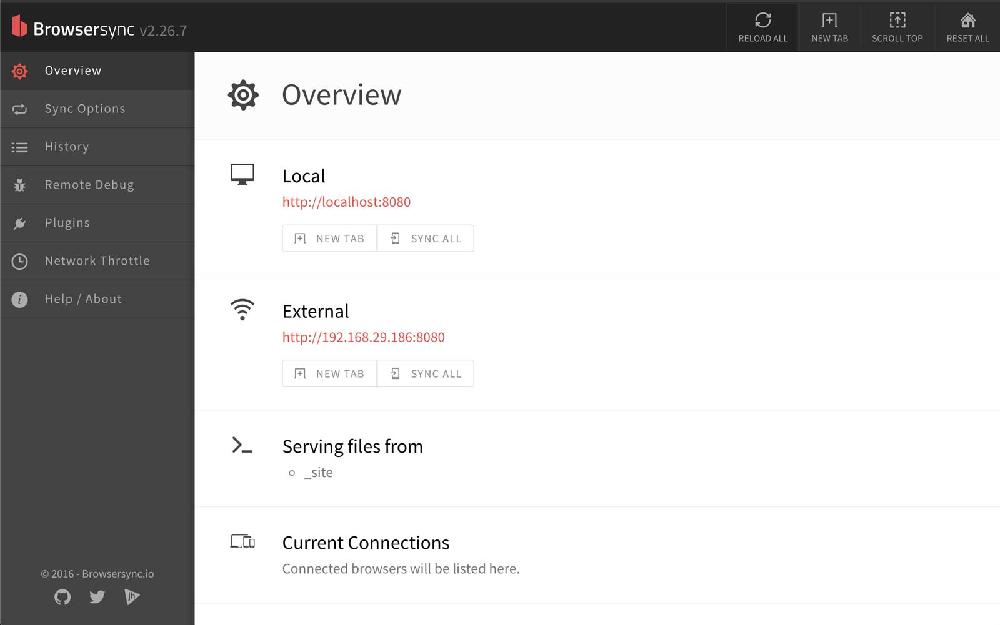
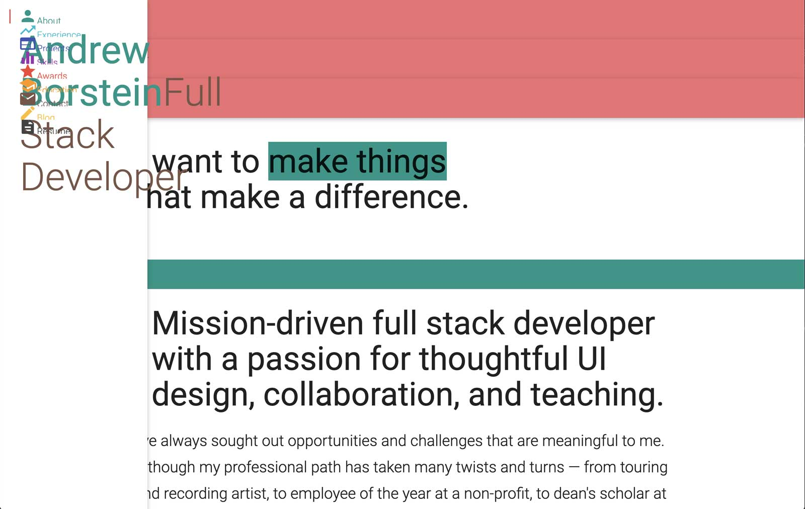
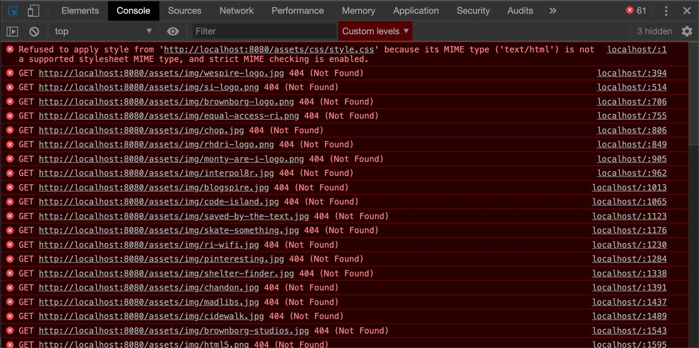

Moving my blog to Eleventy, Part 2: Getting Started
tl:dr;
Last time around, I spent the entire evening installing Node instead of, well, getting started. So that's what I'll do today! In this post I carefully walk through the official Eleventy Quick Start guide, magically turning 3 lines of code into 300 lines of juicy commentary and (hopefully) helpful explanation.
View all posts in this Eleventy series:
Installing Eleventy
Installing Eleventy globally (on my laptop)
After a few days of rest and I'm returning to this project refreshed, rejuvenated, and only slightly beaten down! Small victories are victories nonetheless. I'm ready to install the dang thang.
$ npm install -g @11ty/eleventy
# ... other stuff
+ @11ty/eleventy@0.11.0
added 598 packages from 427 contributors in 39.029s
🎉
OK! We're off to the races, with about 600 packages in tow, NBD 👀. We've just installed the Eleventy package globally, meaning as an application on my laptop. This is an important distinction, because it means that if someone else were to clone my website repo exactly as it is at this step in the process, they wouldn't get a copy of Eleventy. In order for that to happen, we need to also install it as a dependency of this website, which we're about to do.
Creating a package.json file
The next step is to add an infamous package.json file to manage our Javascript dependencies. We'll run the command with -y at the end so we can skip the questionnaire prompt and have it fill in the file with reasonable defaults.
$ npm init -y
This command created a new file
netlify_functions/
public/
.gitignore
CNAME
netlify.toml
package.json ⬅️
README.md
with the following content, automatically pulled from my associated Github repo for this website.
// package.json
{
"name": "portfolio",
"version": "1.0.0",
"description": "Tools used to build this website (first created in 2015, with only minor content updates since): - [GitHub Pages](https://pages.github.com) - you can host any static website (HTML, CSS, JS) really easily using GitHub, totally for free! - [Materialize](https://materializecss.com) - a super handy CSS framework to get Google's Material Design components and style - And a bunch of custom CSS to get it looking just right.",
"main": "index.js",
"scripts": {
"test": "echo \"Error: no test specified\" && exit 1"
},
"repository": {
"type": "git",
"url": "git+https://github.com/andrewborstein/portfolio.git"
},
"keywords": [],
"author": "",
"license": "ISC",
"bugs": {
"url": "https://github.com/andrewborstein/portfolio/issues"
},
"homepage": "https://github.com/andrewborstein/portfolio#readme"
}
Installing Eleventy locally (as a site dependency)
The final step here is to add Eleventy as my first and only dev dependency, which is just a fancy way of saying it's required for development. Our website visitors don't need it, but anyone who wants to install or develop this site locally needs it.
$ npm install --save-dev @11ty/eleventy
# ... other stuff
npm notice created a lockfile as package-lock.json. You should commit this file.
+ @11ty/eleventy@0.11.0
added 533 packages from 416 contributors and audited 533 packages in 24.961s
That adds one new file, a package-lock.json.
netlify_functions/
public/
.gitignore
CNAME
netlify.toml
package.json
package-lock.json ⬅️
README.md
This file is includes the word lock because you're not meant to manually modify it. The contents of your package.json should automatically generate the info inside package-lock.json for you, every time you run npm install, or add a new package with npm. It documents all of your explicit dependencies' implicit dependencies. That's why installing 1 package (Eleventy) actually ends up installing 500 more!
It's like Carl Sagan said, "If you wish to make an apple pie from scratch, you must first invent the universe.".
// package.json
{
// ... other stuff
"homepage": "https://github.com/andrewborstein/portfolio#readme",
"devDependencies": {
"@11ty/eleventy": "^0.10.0" ⬅️
}
}
Now, When I want to build and run this website on my next laptop, or when I eventually turn it into a template that other folks can install and develop themselves, each of those environments will know a) they need to install Eleventy and b) here's how to do it.
Compiling files (Eleventy's super power)
Running the compilation command
The Eleventy Quick Start docs say all I need to run is eleventy and then
This will compile any files matching valid template file extensions in the current directory into the output folder (defaults to
_site).
I'm honestly not sure what that means! It sounds like nothing will happen, because who knows if any of my existing website files are valid Eleventy template types. I assume it requires some setup or configuration to actually work. But the docs say go for it, so fine, let's just go for it!
But before we do that, I should point out that the Getting Started guide recommends running the local version of this command, now that we've installed Eleventy as a dev dependency.
So instead of
$ eleventy
we'll run
$ npx @11ty/eleventy
to ensure my local Eleventy dependency has been successfully installed.
$ npx @11ty/eleventy
Writing _site/README/index.html from ./README.md.
Writing _site/public/index.html from ./public/index.html.
Writing _site/public/blog/hello-world-and-why-im-blogging/index.html from ./public/blog/hello-world-and-why-im-blogging.html.
Writing _site/public/resume/index.html from ./public/resume/index.html.
Wrote 4 files in 0.08 seconds (v0.11.0)
Checking out what's changed
Woah! I'm impressed. It looks like it automatically searched for stuff it could compile and went ahead and did it. Here's a list of what's changed, without any configuration on my part:
-
All files that already in a format that can be compiled have been automatically compiled into
.htmlfiles and moved into a new_sitefolder in the root._site/ ⬅️ netlify_functions/ public/ .gitignore CNAME netlify.toml package.json README.md yarn.lock -
Any existing markdown files changed formats — from markdown to HTML — during compilation.
README.mdis now
README/index.html -
Each compiled file gets transformed into an
index.htmlfile inside a folder with the same and name as the original file. The original directory structure is also retained, but now it's nested inside the top-level_site/folder.public/ blog/ hello-world-and-why-im-blogging.htmlis now
_site/ public/ blog/ hello-world-and-why-im-blogging/ index.html
Pretty cool! Now we're starting to see the power of Eleventy in action.
Serving the website locally
Running the local server command
Next up in these fancy docs is a note about how to serve the files locally, so we can view the website locally while it's still in development.
Run
eleventy --serveto start up a hot-reloading web server.
$ eleventy --serve
Writing _site/README/index.html from ./README.md.
Writing _site/public/index.html from ./public/index.html.
Writing _site/public/blog/hello-world-and-why-im-blogging/index.html from ./public/blog/hello-world-and-why-im-blogging.html.
Writing _site/public/resume/index.html from ./public/resume/index.html.
Wrote 4 files in 0.09 seconds (v0.11.0)
Watching…
[Browsersync] Access URLs:
---------------------------------------
Local: http://localhost:8080
External: http://192.168.29.186:8080
---------------------------------------
UI: http://localhost:3001
UI External: http://localhost:3001
---------------------------------------
[Browsersync] Serving files from: _site
Neat! I love a nice console message. It let me know that it re-compiled my website in a blazing 250 milliseconds. And it shared some handy URLs, too.
Viewing the BrowserSync interface
I know that localhost is likely where I can see my website, but I have no idea what UI is referencing here. When I click it I see this slick BrowserSync interface!

NOICE. I'm not going to dig in too far with this, because I don't want to get distracted. But I'm definitely having fun again! Let's keep going.
Viewing the local version of my website
The first thing I notice is that the website is only available at http://localhost:8080/public/ not http://localhost:8080/ as my command line suggested it would, and that's because the entire site still lives inside a public/ folder, which we'll fix shortly.
After visiting the correct local URL, my website is successfully loaded and WOW does it look production ready.

Debugging my broken website
I open my the console tab in Chrome developer tools and it's telling me that basically none of my assets were loaded.

This makes sense. The site is being loaded from a new /_site directory that only includes compiled HTML files and their parent folders. No other files or folders were touched, including my /assets folder. So all of my CSS files and images are broken because my index.html assumes the assets live in the same folder as it does — they are loaded via relative URLs:
_site/
public/
index.html
public/
assets/ ⬅️
<!-- index.html -->
<link rel="stylesheet" href="/assets/css/style.css" />
The above will only work if the assets/ folder is in the _site/ folder alongside index.html. But it's not yet, because it wasn't moved there by Eleventy. It's looking for directories in places where they don't exist yet.
I'm sure (I hope?) Eleventy has some official method for managing and compiling assets. If not, I can always manually move the assets folder where I need it. I'll circle back later to find out if there's a better way to load my static assets.
Fixing the missing assets, attempt #1
After I move my assets/ folder, this is what my directory looks:
_site/
public/
assets/ ⬅️
index.html
public/
OK, it turns out that simply moving the /assets folder into /_site didn't fix the issue. A closer look shows that the relative URLs actually use a syntax that makes them relative to the root of the site, not their current directory. We want index.html to the find the folder that's sitting right next to it, no matter where they both move.
Fixing the missing assets, attempt #2
I remove the leading / where I link to my assets, so they are now directory-relative URLS instead of website-relative URLs, i.e. /assets/... becomes assets/.... Now because index.html is looking for an assets/ folder in the same directory...
<!-- index.html -->
<link rel="stylesheet" href="assets/css/style.css" />
... it's alive!
Alright, let's take a break. We've earned it 😅.
Join me next week as we dive into what Eleventy does best, by creating dynamic layouts for the both the entire site and for individual blog posts. Or maybe stuff will break or I'll get distracted and we'll tackle something else. Stay tuned!
Email me anytime to offer feedback, ask questions, or just say hello 👋.